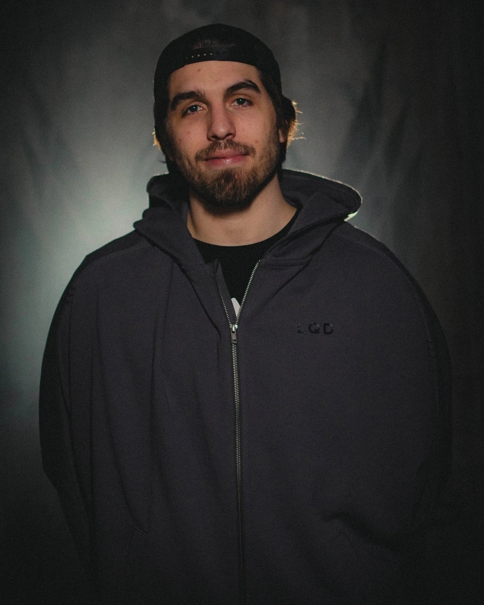
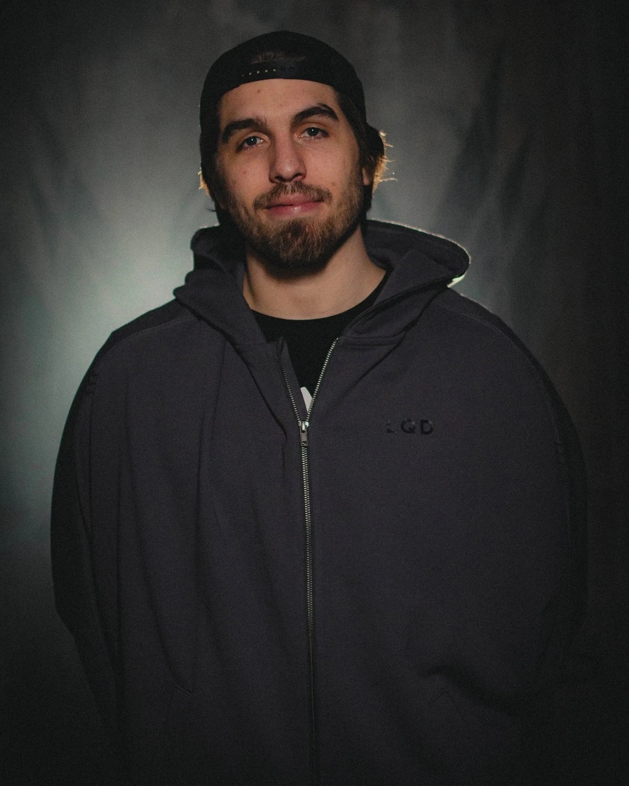
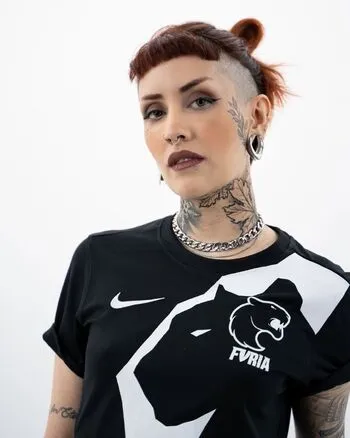
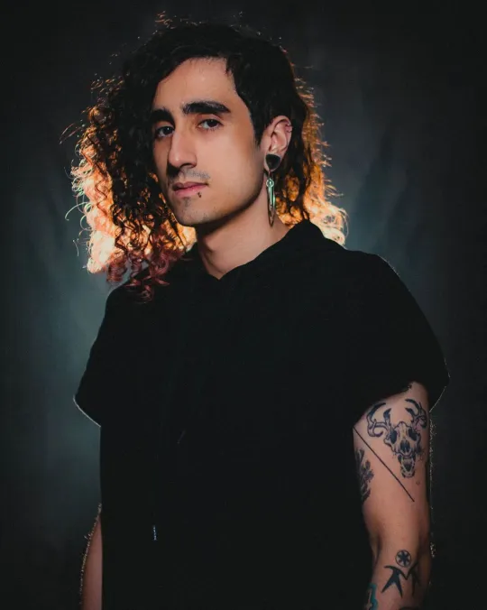
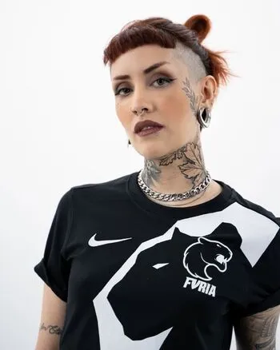
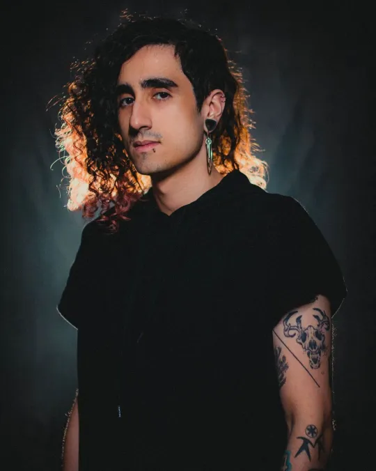

Ordem Paranormal: Desconjuração é a terceira temporada da série Ordem Paranormal, continuação de O Segredo na Floresta. É uma campanha de RPG de mesa baseado em uma versão adaptada pelo mestre do sistema Chamado de Cthulhu (do inglês, Call of Cthulhu). Mestrada pelo streamer e diretor criativo de Enigma do Medo, Cellbit, é protagonizada por Arthur Cervero, Beatrice Portinari, Dante, Elizabeth Webber, Erin Parker, Fernando Carvalho, Joui Jouki, Kaiser e Luciano Carvalho.
O Santo Berço foi destruído. A reestruturada Ordo Realitas agora opera em uma base subterrânea na cidade de São Paulo. De lá, o homem conhecido como Senhor Veríssimo comanda uma legião de agentes que, com auxílio de métodos mais intensos, busca salvar o mundo da ameaça crescente do ocultismo.
 



 


